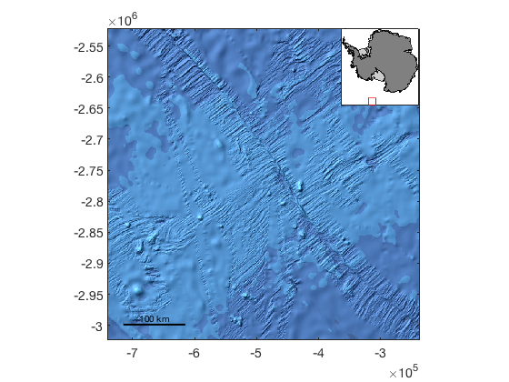
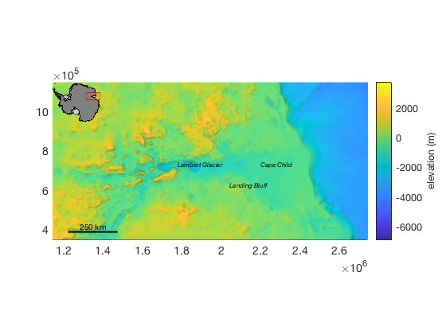
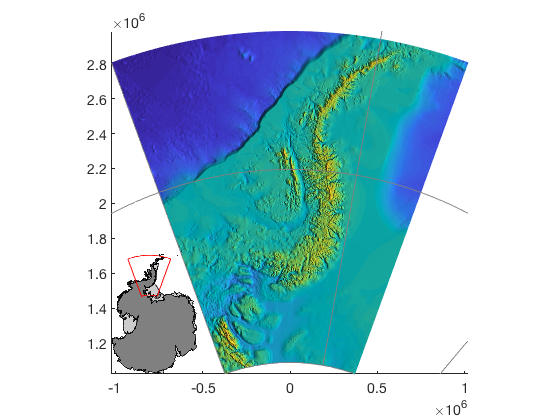
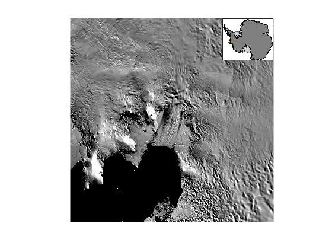
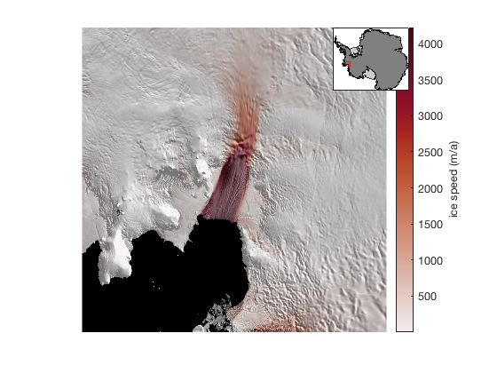
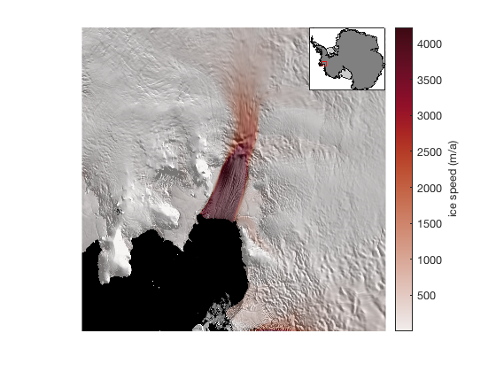

mapzoomps documentation
mapzoomps is part of Antarctic Mapping Tools for Matlab (Greene et al., 2017). Click here for a complete list of functions in AMT.
The mapzoomps function zooms a south polar stereographic map to a specified location and extent. This is an adaptation of mapzoom, but does not require Matlab's Mapping Toolbox. Syntax for mapzoomps is similar to mapzoom, but differs slightly for some options.
Contents
Syntax
mapzoomps
mapzoomps(lat,lon)
mapzoomps(x,y)
mapzoomps('SCAR location')
mapzoomps(...,'size',mapsizekm)
mapzoomps(...,InsetLocation)
mapzoomps(...,'insetsize',sizefraction)
mapzoomps(...,'frame','off')
mapzoomps(...,'km')
mapzoomps(...,'meridian',meridian)
h = mapzoomps(...)Description
mapzoomps(lat,lon) centers a 500 km wide map about the georeferenced location given by lat, lon.
mapzoomps(x,y) centers a 500 km by 500 km map about the polar stereographic eastings and northings x and y. Polar stereographic coordinates are automatically determined by the islatlon function.
mapzoomps('SCAR location') uses scarloc to find the coordinates corresponding to the string 'SCAR location'.
mapzoomps(...,'size',mapsizekm) specifies size of the map in kilometers given mapsizekm, which can be a scalar to create a square map or a two-element array for a rectangular map in the form [mapwidthkm mapheightkm], where mapwidthkm and mapheightkm are the dimensions of the map in kilometers.
mapzoomps(...,InsetLocation) creates an inset map at the location InsetLocation, which can be
- 'southeast' or 'se' (lower right)
- 'northwest' or 'nw' (upper left)
- 'northeast' or 'ne' (upper right)
- 'southwest' or 'sw' (lower left)
mapzoomps(...,'insetsize',sizefraction) specifies size of the inset as a fraction of the width of the current map. Default sizefraction is 0.25.
mapzoomps(...,'frame','off') removes frame from the inset.
mapzoomps(...,'km') is for plots in polar stereographic kilometers rather than the default meters.
mapzoomps(...,'meridian',meridian) specifies a meridian longitude in the polar stereographic coordinate conversion. Default meridian is 0. This feature may not be fully working quite yet...
h = mapzoomps(...) returns a handle h of inset map axes.
Example 1
Initialize a 500 km by 500 km map centered on Pitman Fracture Zone, plot ibcso bathymetry, and place a graphical reference scale with scalebarps. When calling mapzoomps specify 'ne' to place an inset map in the upper right-hand corner.
mapzoomps('pitman fracture zone','ne') ibcso('image','xy') scalebarps axis image % tightens up null space
Example 2
Plot Bedmap2 bed elevation, apply relief shading with shadem, and center a 1600 km wide by 800 km tall map on the Lambert Glacier/Amery Ice Shelf system at (71°S,69°N). Place frameless inset map in the upper left hand corner:
figure bedmap2('bed','xy') shadem([225 80],3) mapzoomps(-71,69,'size',[1600 800],'nw','frame','off') scalebarps scarlabel({'Lambert Glacier','Cape Child','Landing Bluff'},... 'fontangle','italic','fontsize',8)
Example 3: Rotated coordinates:
This syntax is currently in beta, but if instead of entering a single lat,lon location into mapzoomps, you may enter two-element vectors defining [SouthernLimit NorthernLimit] for lat and [WesternLimit EasternLimit] for lon. This syntax will create a curved inset location map showing the geo edges of the map extents. This is what I mean:
% Load some data [lat,lon] = meshgrid(-80:0.01:-63,-90:0.05:-50); z = bedmap2_interp(lat,lon,'bed'); figure mapzoomps([-80 -63],[-90 -50],... % latlim, lonlim 'inset','sw',... % lower left or "southwest" 'insetsize',0.35,... % slightly large inset 'frame','off') % remove the inset frame pcolorps(lat,lon,z,'meridian',-70) graticuleps('meridian',-70) % the grid shadem(3) % hillshade
Fixing a misaligned inset map
Sometimes the inset gets misaligned. This is most common after adding a colorbar. Here's an example:
figure mapzoomps('pine island glacier',... 'mapwidth',350,'inset','ne') modismoaps axis off
So far, so good. But then you try to add something with a colorbar and the inset gets misaligned:
measuresps('speed','alpha',0.5) cb = colorbar; ylabel(cb,' ice speed (m/a) ') cmocean amp % optional colormap by Thyng et al., 2016 (on File Exchange)
To fix the the inset misalignment, simply call mapzooms again, with the same inputs as last time. Calling mapzoomps a second time will delete the old inset and place a new one in the correct spot:
mapzoomps('pine island glacier',... 'mapwidth',350,'inset','ne')
Citing AMT
If this function or any other part of Antarctic Mapping Tools is useful for you, please cite the paper that describes AMT.
Greene, C. A., Gwyther, D. E., & Blankenship, D. D. Antarctic Mapping Tools for Matlab. Computers & Geosciences. 104 (2017) pp.151-157. doi:10.1016/j.cageo.2016.08.003.
Author Info
The mapzoomps function and supporting documentation were written for Antarctic Mapping Tools by Chad A. Greene of the University of Texas at Austin's Institute for Geophysics (UTIG) in February 2016. http://www.chadagreene.com